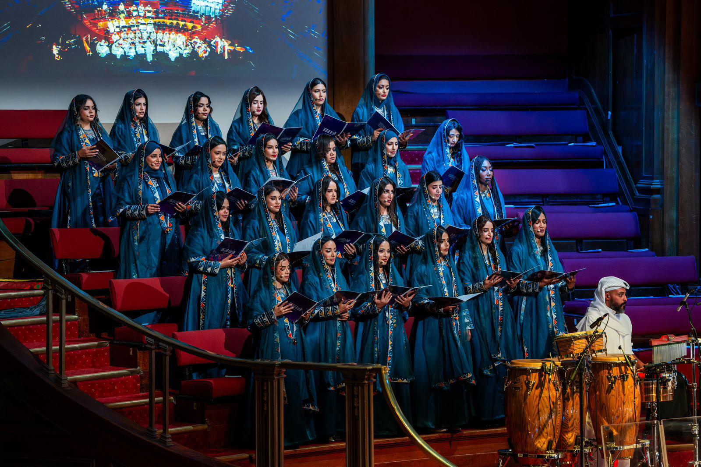

المدينة: جدة
التاريخ: ١٠ أكتوبر ٢٠٢٦
الساعة: ٨:٠٠ مساءً
دخول مجاني
موسيقى حية
وجبات خفيفة

نظرة عامة
تجمع الألحان السعودية بين التراث والحداثة، لتخلق تجربة موسيقية فريدة تعكس الهوية الثقافية للمملكة وتبرز روح الإبداع والتطور في جميع المجالات